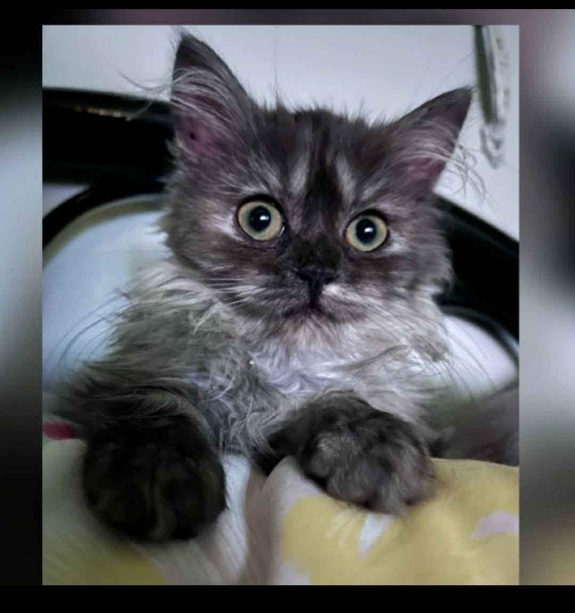
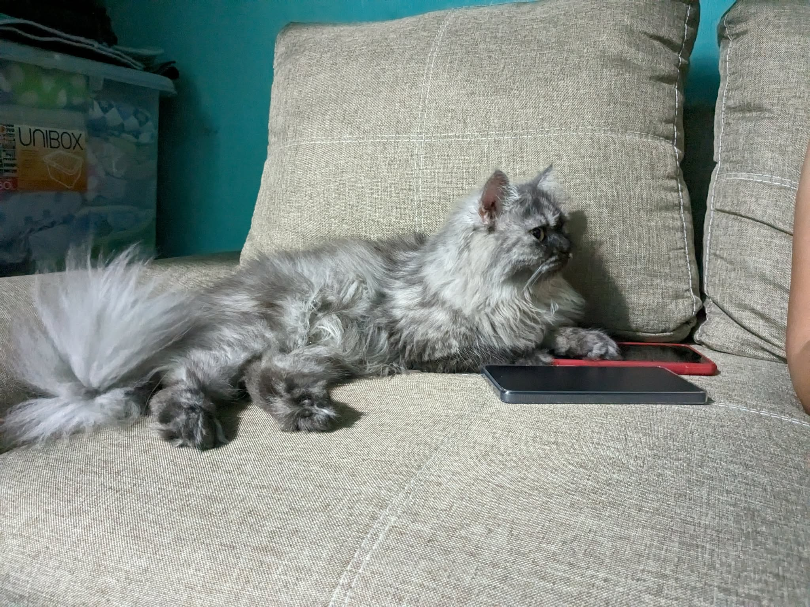
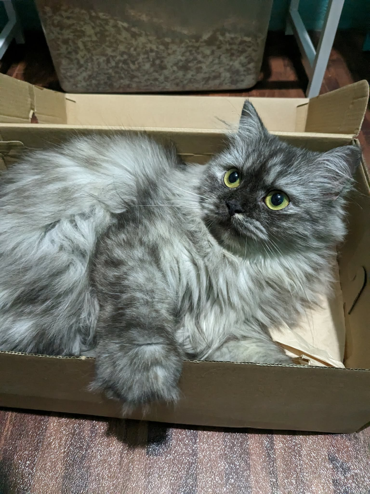

This practice project marks the very beginning of my journey as a web developer, but it also serves as a digital home for a very special member of the family.
Babie Barie isn't just a pet; she’s our very first cat and the true "boss" of the household. From her tiny paws to her soft, irresistible fur, she has brought so much joy into our lives. These days, she’s looking a little rounder and more precious than ever our cutie cat is officially a "babie buntis" (pregnant) and a proud mama to be!
Whether she’s lounging around or demanding attention, I can’t help but want to shower her with love. Between coding sessions, I’m always tempted to stop everything just to kiss her adorable pango nose and pet her incredibly soft fur.



The Inner Circle: This is also her another photos with her friends